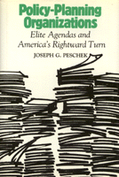

<body bgcolor="#FFFFFF" text="#000000" link="#0000FF" vlink="#CC0000" alink="#CC0000"><center><hr width="350" size="1" align="center" noshade>Explores neglected terrain in American politics<hr width="350" size="1" align="center" noshade><p><a href="https://cdcshoppingcart.uchicago.edu/Cart/ChicagoBook.aspx?ISBN=9780877224686&&PRESS=temple" target="_top">Buy this book!</a> | <a href="https://cdcshoppingcart.uchicago.edu/Cart/Cart.aspx?PRESS=temple" target="_top">View Cart</a> | <a href="https://cdcshoppingcart.uchicago.edu/Cart/Cart.aspx?PRESS=temple" target="_top">Check Out</a></p><p></p></center><!--none//--><h1>Policy-Planning Organizations</h1>
<H2>Elite Agendas and America's Rightward Turn</H2>
<h3>Joseph G. Peschek</h3>
<P>cloth 0-87722-468-4 $37.95, Apr 87, <FONT COLOR=#990033>Out of Print</FONT>
<BR> 288 pp
</P><p>This book explores neglected terrain in American politics, the ways elites struggle to shape policy agendas and political debate through policy-planning organizations. It focuses on efforts to analyze and propose solutions to major domestic and international questions confronting the U.S. since 1973. Policy-planners are viewed not only as objective producers of research and recommendation, but as active agents linked to power blocs and policy currents, reflecting and in turn shaping ideological shifts and political regroupments in a time of momentous economic transformations.
<p>Within the elite policy network, five key groups are shown to represent a spectrum of opinion in ruling circles: the American Enterprise Institute, the Brookings Institution, the Heritage Foundation, the Institute for Contemporary Studies, and the Trilateral Commission. The book provides background information on the organizations, the context of the postwar political economy, and the political mobilization of elites in the 1970s. It then analyzes evolving perspectives and policy debates in the substantive areas of the international economy, foreign policy and national security, and political institutions and democratic practices.
<p>Throughout the book, views of policy-planners are related to real-world developments and processes of elite regroupment, with a concern for the implications for democratic politics in the U. S.
<BR>&nbsp;<H2>About the Author(s)</H2>
<P><b>Joseph G. Peschek</b> is Assistant Professor of Political Science at Potsdam College of the State University of New York.</P>
<BR><H2>Subject Categories</H2>
<p><A HREF="/tempress/political.html" TARGET="_top">Political Science and Public Policy</a>
<BR><A HREF="/tempress/sociology.html" TARGET="_top">Sociology</a>
</p>
<p align="center"><a href="https://cdcshoppingcart.uchicago.edu/Cart/ChicagoBook.aspx?ISBN=9780877224686&&PRESS=temple" target="_top">Buy this book!</a> | <a href="https://cdcshoppingcart.uchicago.edu/Cart/Cart.aspx?PRESS=temple" target="_top">View Cart</a> | <a href="https://cdcshoppingcart.uchicago.edu/Cart/Cart.aspx?PRESS=temple" target="_top">Check Out</a></p><p><font face="Arial" size="1"><a href="copyright.html" onMouseOver="window.status='Web Copyright Policy';return true;" onMouseOut="window.status=''" title="Web Copyright Policy">&copy;</a> 2015 <a href="http://www.temple.edu" target="new" onMouseOver="window.status='Link to Temple University home page';return true;" onMouseOut="window.status=''" title="Link to Temple University home page">Temple University</a>. All Rights Reserved. http://www.temple.edu/tempress/titles/413_reg.html</font></p>